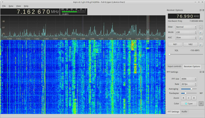
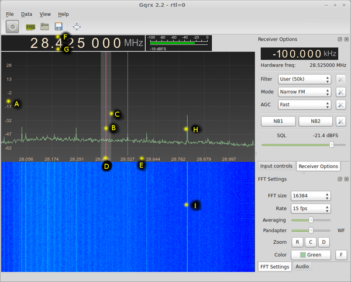

Gqrx
Dieser Artikel wurde für die folgenden Ubuntu-Versionen getestet:
Ubuntu 14.04 Trusty Tahr
Zum Verständnis dieses Artikels sind folgende Seiten hilfreich:

Gqrx ist eine SDR-Software, durch die der Rechner in Kombination mit geeigneter Hardware zum Breitbandempfänger wird. Gqrx unterstützt eine ganze Reihe SDR-Hardware, beispielsweise Funcube-Dongle, HackRF- und USRP-Geräte sowie sehr günstige DVB-T-Sticks mit Realtek-Chipsatz, die eigentlich nur zum DVB-T-Empfang vorgesehen sind.
Es basiert auf dem "GNU Radio SDR framework" und der Grafikbibliothek Qt und ist unter der GNU General Public License (GPL) lizenziert. Das Programm funktioniert "out of the box" - installieren, Hardware via USB anstecken, zuhören.
Beispiele für unterstützte Hardware:
TerraTec NOXON DAB Stick (rev. 1, Realtek RTL2832, USB-ID
0ccd:00b3)TerraTec NOXON DAB Stick (rev. 2, Realtek RTL2832U, USB-ID
0ccd:00e0)
Auf der Homepage  gibt es eine komplette Liste der unterstützten Hardware, Links zu YouTube-Videos und weitere Hilfestellungen.
gibt es eine komplette Liste der unterstützten Hardware, Links zu YouTube-Videos und weitere Hilfestellungen.
Installation¶
Ab Ubuntu 14.04 findet sich das Programm in den offiziellen Paketquellen [1]:
gqrx-sdr (universe)
 mit apturl
mit apturl
Paketliste zum Kopieren:
sudo apt-get install gqrx-sdr
sudo aptitude install gqrx-sdr
Alternativ kann das Programm kann entweder aus dem Quelltext  kompiliert werden oder über das "Personal Package Archiv" (PPA) [2] des Entwicklers Alexandru Csete installiert werden.
kompiliert werden oder über das "Personal Package Archiv" (PPA) [2] des Entwicklers Alexandru Csete installiert werden.
PPA¶
Durch das Einbinden des PPAs gqrx-sdr erhält man automatisch die stabile Version. Zuerst sollte allerdings eine evtl. aus den offiziellen Paketquellen installierte Version komplett entfernt werden. Weitere Informationen sind der Anleitung Install Gqrx SDR on Ubuntu Linux zu entnehmen.
Bedienung¶
Das Programm kann über den Befehl gqrx gestartet [3] werden. Gewisse Dinge erklären sich von selbst, beispielsweise die Umschaltung der Modulationsart (Mode) und die Rauschsperre/Squelch (SQL), oder man lernt sie in wenigen Sekunden kennen, so wie z.B. das Ändern des Filters (Filter).
Als Hilfe für jene Bedienelemente, die sich dem unkundigen Benutzer nicht sofort von allein erschließen, eine Tabelle (für Buchstaben siehe Abbildung):

| Bedienung gqrx | |
| Verfügbare Optionen | Bedeutung |
| Scrollen auf der Frequenzleiste (E) - nicht (D), verändert die Frequenz | Frequenzbereich "zoomen" |
| (A) Signalpegel-Leiste nach oben/unten verschieben oder scrollen | Wasserfall-Empfindlichkeit |
Auf das Spektrum (H) oder den Wasserfall (I)  klicken klicken | Wechsel zur dortigen Frequenz, ohne den Frequenzausschnitt zu verändern |
| An (F) oder (G) Scrollen in der Frequenzanzeige | Verändert die Frequenz - Ausschnitt und Zeigerlinie bleiben an der gleichen Position |
| (C) halten + bewegen | Filterbreite |
| (B) halten + bewegen oder im Spektrum scrollen | Frequenzänderung mit Hilfe der Zeigerlinie |
| (F) klicken (gilt für jede Stelle) | Frequenzerhöhung |
| (G) klicken (gilt für jede Stelle) | Frequenzverringerung |
| An (F) oder (G) über (Nummern-)Tastatur ⇩ num | Frequenzdirekteingabe |
Einstellungen¶
Im Ordner ~/.config/gqrx/ befindet sich die Konfigurationsdatei default.conf, die man auch mit einem Texteditor bearbeiten kann. Diese sieht in etwa so aus:
[General] crashed=false # hier speichert gqrx ab falls es beim letzten mal abgestürzt ist, und gibt beim nächsten mal eine Meldung aus (sollte) configversion=2 [input] device="rtl=0" # hier wird der Gerätename gespeichert - Achtung, sollten einmal zwei drin gesteckt haben, nun aber eines, ändert sich die '=1' in eine '=0' sample_rate=1200000 # Spektrumbreite frequency=24905000 # Emfangsfrequenz gain=-1 # HF-Vorverstärkung corr_freq=30 # (Soundkarten-)Korrektur in µs [receiver] demod=6 # Modulationsart 3=FM-n / 6=LSB ...derzeit (lfd. Nummer im Pulldownmenu) offset=-70000 # Offset der Empfangsfrequenz zur Spektrum-Mitte sql_level=-240 # Rauschsperren Level ... hier: -24,0 dB [audio] gain=-98 # Lautstärke ... hier: -9,8 dB rec_dir= # Verzeichnis fürs Audioaufzeichnungen (wenn leer, stürzt das Programm derzeit ab) [fft] fft_size=8192
Leider ist das Abspeichern bei manchen Versionen fehlerhaft - es kann also sein, dass das Programm nicht alles speichert. Dann hilft ein manuelles Ändern der Konfigurationsdatei mit einem Editor und anschließendem Entziehen der Schreibrechte.
Problembehebung¶
Konflikt mit den TV-Treibern¶
Falls GQRX den DVB-T-Sticks mit Realtek-Chipsatz nicht verwenden kann, wenn dieser in Verwendung für DVB ist, kann das Modul temporär entladen werden:
1 2 3 | sudo rmmod dvb_usb_rtl28xxu sudo rmmod rtl2832 sudo rmmod rtl2830 |
Permanent kann das über Blacklisting erfolgen:
blacklist dvb_usb_rtl28xxu blacklist rtl2832 blacklist rtl2830
 Programmübersicht
Programmübersicht- Erstellt mit Inyoka
-
 2004 – 2017 ubuntuusers.de • Einige Rechte vorbehalten
2004 – 2017 ubuntuusers.de • Einige Rechte vorbehalten
Lizenz • Kontakt • Datenschutz • Impressum • Serverstatus -
Serverhousing gespendet von